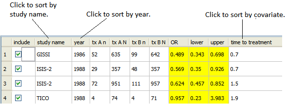
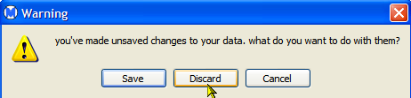

You can sort data by the following types of columns:

For example, click study name to sort the rows alphabetically by study name. Clicking the same column a second time sorts the data in reverse order.
To put the data back in the order it was in before the most recent sorting, select undo from the Edit menu.
Note: After you sort data, when you close Open Meta-Analyst, you are prompted to save your changes. If you want to keep your data in its original (unsorted) order, click Discard in the dialog, as shown below.

If you want to save the sorted data in the new order, click Save.
| Editing Entries in a Data Set | Cumulative Meta-Analysis | |